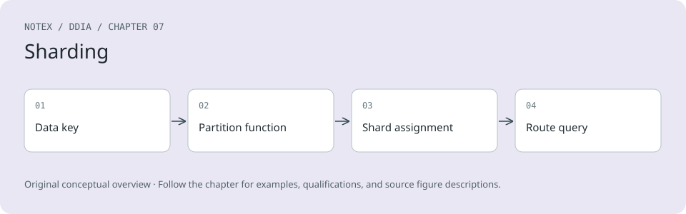

Chapter 7. Sharding
Clearly, we must break away from the sequential and not limit the computers. We must state definitions and provide for priorities and descriptions of data. We must state relationships, not procedures.
Grace Murray Hopper, Management and the Computer of the Future (1962)
A distributed database typically distributes data across nodes in two ways:
-
It stores a copy of the same data on multiple nodes. This is replication, which we discussed in Chapter 6.
-
If there’s so much data or such a high write throughput that a single node cannot handle it, it splits the data into smaller shards or partitions, and stores different shards on different nodes. We’ll discuss sharding in this chapter.
Normally, shards are defined in such a way that each piece of data (each record, row, or document) belongs to exactly one shard. There are various ways of achieving this, which we will discuss in depth in this chapter. In effect, each shard is a small database of its own, although some database systems support operations that touch multiple shards at the same time.
Sharding is usually combined with replication, so that copies of each shard are stored on multiple nodes. This means that even though each record belongs to exactly one shard, it may still be stored on several different nodes for fault tolerance.
A node may store more than one shard. If a single-leader replication model is used, the combination of sharding and replication can look like Figure 7-1, for example. Each shard’s leader is assigned to one node, and its followers are assigned to other nodes. Each node may be the leader for some shards and a follower for other shards, but each shard still has only one leader.
Diagram illustrating the combination of replication and sharding, showing nodes acting as leaders for some shards and followers for others, with arrows indicating replication streams.
Figure 7-1. Combining replication and sharding: each node acts as leader for some shards and a follower for other shards
Sharding and Partitioning
What we call a shard in this chapter has many names depending on which software you’re using. It’s called a partition in Kafka, a range in CockroachDB, a region in HBase and TiDB, a vBucket in Couchbase, a vnode in Riak, a token-range in Cassandra, and a tablet in Bigtable, YugabyteDB, and ScyllaDB, to name just a few.
Some databases treat partitions and shards as two distinct concepts. For example, in PostgreSQL, partitioning is a way of splitting a large table into several files that are stored on the same machine (which has several advantages, such as making it very fast to delete an entire partition), whereas sharding splits a dataset across multiple machines [1, 2]. In many other systems, partitioning is just another word for sharding.
While partitioning is quite descriptive, the term sharding is perhaps surprising. According to one theory, the term arose from the online role-playing game Ultima Online, in which a magic crystal was shattered into pieces, and each of the shards refracted a copy of the game world [3]. The term shard thus came to mean one of a set of parallel game servers, and later it was carried over to databases. Another theory is that it was originally an acronym for System for Highly Available Replicated Data—reportedly a 1980s database, details of which are lost to history.
By the way, partitioning has nothing to do with network partitions (netsplits), a type of fault in the network between nodes. We will discuss such faults in Chapter 9.
Everything about replication of databases in Chapter 6 applies equally to replication of shards. Since the choice of sharding scheme is mostly independent of the choice of replication scheme, we will ignore replication in this chapter for the sake of simplicity.
Pros and Cons of Sharding
The primary reason for sharding a database is scalability. Sharding is a solution if the volume of data or the write throughput has become too great for a single node to handle, as it allows you to spread that data and those writes across multiple nodes. (If read throughput is the problem, you don’t necessarily need sharding—you can use read scaling, as discussed in Chapter 6.)
In fact, sharding is one of the main tools we have for achieving horizontal scaling (a scale-out architecture), as discussed in “Shared-Memory, Shared-Disk, and Shared-Nothing Architectures”—that is, allowing a system to grow its capacity not by moving to a bigger machine, but by adding more (smaller) machines. If you can divide the workload such that each shard handles a roughly equal share, you can then assign those shards to different machines to process their data and queries in parallel.
While replication is useful at both small and large scale, because it enables fault tolerance and offline operation, sharding is a heavyweight solution that is mostly relevant at large scale. If your data volume and write throughput are such that a single machine can handle them (and a single machine can do a lot nowadays!), it’s often better to avoid sharding and stick with a single-shard database.
The reason for this recommendation is that sharding adds complexity. You typically have to decide which records to put in which shard by choosing a partition key; all records with the same partition key are placed in the same shard [4]. This choice matters because accessing a record is fast if you know which shard it’s in, but if you don’t, you have to do an inefficient search across all shards. The sharding scheme is also difficult to change.
Sharding often works well for key-value data, where you can easily shard by key, but it’s harder with relational data, where you may want to search by a secondary index or join records that might be distributed across different shards. We will discuss this further in “Sharding and Secondary Indexes”.
Another problem with sharding is that a write may need to update related records in several shards. While transactions on a single node are quite common, ensuring consistency across multiple shards requires a distributed transaction. As we shall see in Chapter 8, distributed transactions are available in some databases, but they are usually much slower than single-node transactions and may become a bottleneck for the system as a whole.
Some systems use sharding even on a single machine, typically running one single-threaded process per CPU core to make use of the parallelism in the CPU or to take advantage of a nonuniform memory access (NUMA) architecture in which some banks of memory are closer to one CPU than to others [5]. For example, Redis, VoltDB, and FoundationDB use one process per core and rely on sharding to spread load across CPU cores in the same machine [6].
Sharding for Multitenancy
Software as a service (SaaS) products and cloud services are often multitenant, where each tenant is a customer. Multiple users may have logins on the same tenant, but each tenant has a self-contained dataset that is separate from those of other tenants. For example, in an email marketing service, each business that signs up is typically a separate tenant, since one business’s newsletter sign-ups, delivery data, etc., are separate from those of other businesses.
Sometimes sharding is used to implement multitenant systems. Either each tenant is given a separate shard, or multiple small tenants may be grouped together into a larger shard. These shards might be physically separate databases (which we previously touched on in “Embedded Storage Engines”) or separately manageable portions of a larger logical database [7]. Using sharding for multitenancy has several advantages:
Resource isolation
If one tenant performs a computationally expensive operation, it is less likely that other tenants’ performance will be affected if they are running on different shards.
Permission isolation
If there is a bug in your access control logic, it’s less likely that you will accidentally give one tenant access to another tenant’s data if those tenants’ datasets are stored physically separately from each other.
Cell-based architecture
You can apply sharding not only at the data storage level, but also for the services running your application code. In a cell-based architecture, the services and storage for a particular set of tenants are grouped into a self-contained cell, and different cells are set up such that they can run largely independently from each other. This approach provides fault isolation: a fault in one cell remains limited to that cell, and tenants in other cells are not affected [8].
Per-tenant backup and restore
Backing up each tenant’s shard separately makes it possible to restore a tenant’s state from a backup without affecting other tenants, which can be useful if the tenant accidentally deletes or overwrites important data [9].
Regulatory compliance
Data privacy regulations such as the GDPR and CCPA give individuals the right to access and request deletion of personal information that businesses store about them. If each person’s data is stored in a separate shard, this translates into simple data export and deletion operations on their shard [10].
Data residence
If a particular tenant’s data needs to be stored in a particular jurisdiction to comply with data residency laws, a region-aware database can allow you to assign that tenant’s shard to a particular region.
Gradual schema rollout
Schema migrations (previously discussed in “Schema flexibility in the document model”) can be rolled out gradually, one tenant at a time. This reduces risk, as you can detect problems before they affect all tenants, but it can be difficult to do transactionally [11].
The main challenges around using sharding for multitenancy are as follows:
-
It assumes that each individual tenant is small enough to fit on a single node. If that is not the case, and you have a single tenant that’s too big for one machine, you will need to additionally perform sharding within that tenant, which brings us back to the topic of sharding for scalability [12].
-
If you have many small tenants, creating a separate shard for each one may incur too much overhead. You could group several small tenants together into a bigger shard, but then you have the problem of how you move tenants from one shard to another as they grow.
-
If you ever need to support features that connect data across multiple tenants, these become harder to implement if you need to join data across multiple shards.
Sharding of Key-Value Data
Say you have a large amount of data, and you want to shard it. How do you decide which records to store on which nodes?
The goal with sharding is to spread the data and the query load evenly across nodes. If every node takes a fair share, then—in theory—10 nodes should be able to handle 10 times as much data and 10 times the read and write throughput of a single node (ignoring replication). If you add or remove a node, you also want to be able to rebalance the load so that it is evenly distributed across the new number of nodes.
If the sharding is unfair, so that some shards have more data or queries than others, we call it skewed. The presence of skew makes sharding much less effective. In an extreme case, all the load could end up on one shard, so 9 out of 10 nodes are idle, and your bottleneck is the single busy node. A shard with disproportionately high load is called a hot shard or hot spot. If one key has a particularly high load (e.g., a celebrity in a social network), we call it a hot key.
To split the dataset into shards, we need an algorithm that takes as input the partition key of a record and tells us which shard contains that record. In a key-value store the partition key is usually the key or the first part of the key. In a relational model the partition key might be a column of a table (not necessarily its primary key). That algorithm needs to be amenable to rebalancing in order to relieve hot spots.
Sharding by Key Range
One way of sharding is to assign a contiguous range of partition keys (from a minimum to a maximum) to each shard, like the volumes of a paper encyclopedia, as illustrated in Figure 7-2. In this example, an entry’s partition key is its title. If you want to look up the entry for a particular title, you can easily determine which shard contains that entry, and thus pick the correct book off the shelf, by finding the volume whose key range contains the title you’re looking for.
Illustration of an encyclopedia set organized by key range, with each volume labeled by the range of titles it contains, demonstrating data sharding by key range.
Figure 7-2. A print encyclopedia is sharded by key range.
The ranges of keys are not necessarily evenly spaced, because your data may not be evenly distributed. For example, in Figure 7-2, volume 1 contains words starting with A and B, but volume 12 contains words starting with T, U, V, W, X, Y, and Z. Simply having one volume per two letters of the alphabet would lead to some volumes being much bigger than others. To distribute data evenly, the shard boundaries need to adapt to the data.
The shard boundaries might be chosen manually by an administrator, or the database can choose them automatically. Manual key-range sharding is used by Vitess (a sharding layer for MySQL), for example; the automatic variant is used by Bigtable and its open source equivalent HBase, the range-based sharding option in MongoDB, as well as CockroachDB, RethinkDB, and FoundationDB [6]. YugabyteDB offers both manual and automatic tablet splitting.
Within each shard, keys are stored in sorted order (e.g., in a B-tree or SSTables, as discussed in Chapter 4). This has the advantage that range scans are easy, and you can treat the key as a concatenated index in order to fetch several related records in one query (see “Multidimensional and Full-Text Indexes”). For example, consider an application that stores data from a network of sensors, where the key is the timestamp of the measurement. Range scans are very useful in this case, because they let you easily fetch, say, all the readings from a particular month.
A downside of key-range sharding is that you can easily get a hot shard if there are a lot of writes to nearby keys. For example, if the key is a timestamp, then the shards correspond to ranges of time—for example, one shard per month. If you write data from the sensors to the database as the measurements happen, all the writes will end up going to the same shard (the one for this month), so that shard will be overloaded with writes while others sit idle [13].
To avoid this problem in the sensor database, you need to use something other than the timestamp as the first element of the key. For example, you could prefix each timestamp with the sensor ID so that the key ordering is first by sensor ID and then by timestamp. Assuming you have many sensors active at the same time, the write load will end up more evenly spread across the shards. The downside is that when you want to fetch the values of multiple sensors within a time range, you now need to perform a separate range query for each sensor.
Rebalancing key-range sharded data
When you first set up your database, there are no key ranges to split into shards. Some databases, such as HBase and MongoDB, allow you to configure an initial set of shards on an empty database, which is called pre-splitting. This requires that you already have some idea of what the key distribution is going to look like, so that you can choose appropriate key range boundaries [14].
Later, as data volume and write throughput increase, a system with key-range sharding grows by splitting an existing shard into two or more smaller shards, each of which holds a contiguous subrange of the original shard’s key range. The resulting smaller shards can then be distributed across multiple nodes. If large amounts of data are deleted, you may also need to merge several adjacent shards that have become small into one bigger one. This process is similar to what happens at the top level of a B-tree (see “B-Trees”).
With databases that manage shard boundaries automatically, a shard split is typically triggered by the shard reaching a configured size (e.g., on HBase, the default is 10 GB) or, in some systems, the write throughput being persistently above a certain threshold. Thus, a hot shard may be split even if it is not storing a lot of data, so that its write load can be distributed more uniformly.
Unfortunately, the number of shards adapts to the data volume. If there is only a small amount of data, a small number of shards is sufficient, so overheads are small; if there is a huge amount of data, the size of each individual shard is limited to a configurable maximum [15].
Unfortunately, splitting a shard is an expensive operation, since it requires all its data to be rewritten into new files, similarly to a compaction in a log-structured storage engine. A shard that needs splitting is often also one that is under high load, and the cost of splitting can exacerbate that load, risking it becoming overloaded.
Sharding by Hash of Key
Key-range sharding is useful if you want records with nearby (but different) partition keys to be grouped into the same shard—for example, this might be the case with timestamps. If you don’t care whether partition keys are near each other (e.g., if they are tenant IDs in a multitenant application), a common approach is to first hash the partition key before mapping it to a shard.
A good hash function takes skewed data and makes it uniformly distributed. Say you have a 32-bit hash function that takes a string. Whenever you give it a new string, it returns a seemingly random number from 0 to 232 − 1. Even if the input strings are very similar, their hashes are evenly distributed across that range of numbers (but the same input always produces the same output).
For sharding purposes, the hash function need not be cryptographically strong: for example, MongoDB uses MD5, whereas Cassandra and ScyllaDB use Murmur3. Many programming languages have simple hash functions built in (as they are used for hash tables), but they may not be suitable for sharding: for example, in Java’s Object.hashCode() and Ruby’s Object#hash, the same key may have a different hash value in different processes, making them unsuitable for sharding [16].
Hash modulo number of nodes
Once you have hashed the key, how do you choose which shard to store it in? Your first thought may be to take the hash value modulo the number of nodes in the system (using the % operator in many programming languages). For example, hash(key) % 10 would return a number from 0 to 9 (if we write the hash as a decimal number, hash % 10 would be the last digit). If we have 10 nodes, numbered 0 to 9, that seems like an easy way of assigning each key to a node.
The problem with the mod N approach is that if the number of nodes N changes, most of the keys have to be moved from one node to another. Figure 7-3 shows what happens when you have three nodes and add a fourth. Before the rebalancing, node 0 stored the keys whose hashes are 0, 3, 6, 9, and so on. After adding the fourth node, the key with hash 3 has moved to node 3, the key with hash 6 has moved to node 2, the key with hash 9 has moved to node 1, and so on.
Diagram showing key distribution changes before and after rebalancing when adding a fourth node, illustrating how keys move between nodes using a mod N hashing approach.
Figure 7-3. Assigning keys to nodes by hashing the key and taking it modulo the number of nodes. Changing the number of nodes results in many keys moving from one node to another.
The mod N function is easy to compute, but it leads to very inefficient rebalancing because there is a lot of unnecessary movement of records from one node to another. We need an approach that moves as little data as possible.
Fixed number of shards
One simple but widely used solution is to create many more shards than there are nodes and assign several shards to each node. For example, a database running on a cluster of 10 nodes may be split into 1,000 shards from the outset, so that 100 shards are assigned to each node. A key is then stored in shard number hash(key) % 1,000, and the system separately keeps track of which shard is stored on which node.
Now, if a node is added to the cluster, the system can reassign some of the shards from existing nodes to the new node until they are fairly distributed once again. This process is illustrated in Figure 7-4. If a node is removed from the cluster, the same happens in reverse.
In this model, only entire shards are moved between nodes, which is cheaper than splitting shards. The number of shards does not change, nor does the assignment of keys to shards. The only thing that changes is the assignment of shards to nodes. This reassignment is not immediate—it takes some time to transfer a large amount of data over the network—so the old assignment of shards is used for any reads and writes that happen while the transfer is in progress.
Diagram illustrating the rebalancing of shards in a database cluster before and after adding a new node, showing the reassignment of shards to distribute them evenly across the nodes.
Figure 7-4. Adding a new node to a database cluster with multiple shards per node
It’s common to choose the number of shards to be one that is divisible by many factors, so that the dataset can be evenly split across various numbers of nodes—not requiring the number of nodes to be a power of 2, for example [4]. You can even account for mismatched hardware in your cluster: by assigning more shards to nodes that are more powerful, you can make those nodes take on a greater share of the load.
This approach to sharding is used in Citus (a sharding layer for PostgreSQL), Riak, Elasticsearch, and Couchbase, among others. It works well as long as you have a good estimate of how many shards you will need when you first create the database. You can then add or remove nodes easily, subject to the limitation that you can’t have more nodes than you have shards.
If you find the originally configured number of shards to be wrong—for example, if you have reached a scale where you need more nodes than you have shards—then an expensive resharding operation is required. It needs to split each shard and write it out to new files, using a lot of additional disk space in the process. Some systems don’t allow resharding while concurrently writing to the database, which makes it difficult to change the number of shards without downtime.
Choosing the right number of shards is difficult if the total size of the dataset is highly variable (e.g., if it starts small but may grow much larger over time). Since each shard contains a fixed fraction of the total data, the size of each shard grows proportionally to the total amount of data in the cluster. If shards are very large, rebalancing and recovery from node failures become expensive. But if shards are too small, they incur too much overhead. The best performance is achieved when the size of shards is “just right,” neither too big nor too small, which can be hard to achieve if the number of shards is fixed but the dataset size varies.
Sharding by hash range
If the required number of shards can’t be predicted in advance, it’s better to use a scheme in which the number of shards can adapt easily to the workload. The aforementioned key-range sharding scheme has this property, but it has a risk of hot spots when there are a lot of writes to nearby keys. One solution is to combine key-range sharding with a hash function so that each shard contains a range of hash values rather than a range of keys.
Figure 7-5 shows an example using a 16-bit hash function that returns a number from 0 to 65,535 = 216 − 1 (in reality, the hash is usually 32 bits or more). Even if the input keys are very similar (e.g., consecutive timestamps), their hashes are uniformly distributed across that range. We can then assign a range of hash values to each shard—for example, values from 0 to 16,383 to shard 0, values from 16,384 to 32,767 to shard 1, and so on.
Diagram illustrating hash-range sharding by assigning a range of hash values to different shards based on timestamp inputs.
Figure 7-5. Assigning a contiguous range of hash values to each shard
As with key-range sharding, in hash-range sharding a shard can be split when it becomes too big or too heavily loaded. This is still an expensive operation, but it can happen as needed, so the number of shards adapts to the volume of data rather than being fixed in advance.
The downside compared to key-range sharding is that range queries over the partition key are not efficient, as keys in the range are now scattered across all the shards. However, if keys consist of two or more columns and the partition key is only the first of these columns, you can still perform efficient range queries over the second and later columns. As long as all records in the range query have the same partition key, they will be in the same shard.
Partitioning and Range Queries in Data Warehouses
Data warehouses such as BigQuery, Snowflake, and Delta Lake support a similar indexing approach, though the terminology differs. In BigQuery, for example, the partition key determines which partition a record resides in, while “cluster columns” determine how records are sorted within the partition. Snowflake assigns records to “micro-partitions” automatically but allows users to define cluster keys for a table. Delta Lake supports both manual and automatic partition assignment and supports cluster keys. Clustering data not only improves range scan performance, but can improve compression and filtering performance as well.
YugabyteDB and DynamoDB [17] use hash-range sharding, and it is an option in MongoDB. Cassandra and ScyllaDB use a variant of this approach that is illustrated in Figure 7-6.
Diagram illustrating the redistribution of hash ranges in Cassandra when a new node is added, showing how the dataset is balanced across nodes.
Figure 7-6. Cassandra and ScyllaDB split the range of possible hash values (here 0–1024) into contiguous ranges with random boundaries and assign several ranges to each node.
The space of hash values is split into a number of ranges proportional to the number of nodes (the figure shows 3 ranges per node, but actual numbers are 16 per node in Cassandra by default, and 256 per node in ScyllaDB), with random boundaries between those ranges. This means some ranges are bigger than others, but by having multiple ranges per node, those imbalances tend to even out [15].
When nodes are added or removed, range boundaries are adjusted and shards are split or merged accordingly. In Figure 7-6, when node 3 is added, node 1 transfers parts of two of its ranges to node 3, and node 2 transfers part of one of its ranges to node 3. This has the effect of giving the new node an approximately fair share of the dataset, without transferring more data than necessary from one node to another.
Consistent hashing
A consistent hashing algorithm is a hash function that maps keys to a specified number of shards in a way that satisfies two properties:
-
The number of keys mapped to each shard is roughly equal.
-
When the number of shards changes, as few keys as possible are moved from one shard to another.
Note that consistent here has nothing to do with replica consistency (see Chapter 6) or ACID consistency (see Chapter 8), but rather describes the tendency of a key to stay in the same shard if possible.
The sharding algorithm used by Cassandra and ScyllaDB is similar to the original definition of consistent hashing [18], but several other consistent hashing algorithms have also been proposed [19], such as highest random weight, also known as rendezvous hashing [20], and jump consistent hashing [21]. With these approaches, rather than a small number of existing shards being split into subranges to create new shards for a node that is added, the new node is instead assigned individual keys that were previously scattered across all the other nodes. Which is preferable depends on the application.
Skewed Workloads and Relieving Hot Spots
Consistent hashing ensures that keys are uniformly distributed across nodes, but that doesn’t mean that the actual load is uniformly distributed. If the workload is highly skewed—that is, there is much more data under some partition keys than others, or the rate of requests to some keys is much higher than to others—you can still end up with some servers being overloaded while others sit almost idle.
For example, on a social media site, a post by a celebrity user with millions of followers may cause a storm of activity [22]. This event can result in a large volume of reads and writes to the same key (where the partition key is perhaps the user ID of the celebrity, or the ID of the action that people are commenting on).
In such situations, a more flexible sharding policy is required [23, 24]. A system that defines shards based on ranges of keys (or ranges of hashes) makes it possible to put an individual hot key in a shard by itself, perhaps even assigning it a dedicated machine [25].
It’s also possible to compensate for skew at the application level. For example, if one key is known to be very hot, a simple technique is to add a random number to the beginning or end of the key. Adding just two random digits would split the writes to the key evenly across 100 keys, allowing those keys to be distributed to different shards.
However, having split the writes across multiple keys, any reads now have to do additional work, as they have to read the data from all 100 keys and combine it. The volume of reads to each shard of the hot key is not reduced; only the write load is split. This technique also requires additional bookkeeping: it makes sense to append the random number for only the small number of hot keys; for the vast majority of keys with low write throughput, this would be unnecessary overhead. Thus, you also need some way of keeping track of which keys are being split, and a process for converting a regular key into a specially managed hot key.
The problem is further compounded by changes in load over time: for example, a particular social media post that has gone viral may experience high load for a couple of days, but thereafter it’s likely to calm down again. In addition, some keys may be hot for writes, while others are hot for reads, necessitating different strategies for handling them.
Some systems (especially cloud services designed for large scale) have automated approaches for dealing with hot shards. Amazon, for instance, calls it heat management [26] or adaptive capacity [17]. The details of how these systems work are beyond the scope of this book.
Operations: Automatic Versus Manual Rebalancing
We have glossed over one important question with regard to rebalancing: does the splitting of shards and rebalancing happen automatically or manually?
Some systems automatically decide when to split shards and when to move them from one node to another, without any human interaction, while others leave sharding to be explicitly configured by an administrator. There is also a middle ground—for example, Couchbase and Riak generate a suggested shard assignment automatically but require an administrator to commit it before it takes effect.
Fully automated rebalancing can be convenient, because there is less operational work to do for normal maintenance, and such systems can even autoscale to adapt to changes in workload. Cloud databases such as DynamoDB are promoted as being able to automatically add and remove shards to adapt to big increases or decreases in load within a matter of minutes [17, 27].
However, automatic shard management can also be unpredictable. Rebalancing is an expensive operation, because it requires rerouting requests and moving a large amount of data from one node to another. If this process is not done carefully, it can overload the network or the nodes, and it might harm the performance of other requests. The system must continue processing writes while the rebalancing is in progress; if a system is near its maximum write throughput, the shard-splitting process might not even be able to keep up with the rate of incoming writes [27].
Such automation can be dangerous in combination with automatic failure detection. For example, say one node is overloaded and is temporarily slow to respond to requests. The other nodes conclude that the overloaded node is dead, and automatically rebalance the cluster to move load away from it. This puts additional load on other nodes and the network, making the situation worse. There is a risk of causing a cascading failure where other nodes become overloaded and are also falsely suspected of being down.
For that reason, it can be good to have a human in the loop for rebalancing. It’s slower than a fully automatic process, but it can help prevent operational surprises. Manual rebalancing is also useful for preemptively rebalancing if a surge in traffic is expected because of a known event, such as Cyber Monday holiday sales or ticket sales for a popular athletic event such as the World Cup.
Request Routing
We have discussed how to shard a dataset across multiple nodes, and how to rebalance those shards as nodes are added or removed. Now let’s move on to another question: if you want to read or write a particular key, how do you know which node—that is, which IP address and port number—you need to connect to?
We call this problem request routing, and it’s very similar to service discovery, which we previously discussed in “Load balancers, service discovery, and service meshes”. The biggest difference between the two is that with services running application code, each instance is usually stateless, and a load balancer can send a request to any of the instances. With sharded databases, a request for a key can be handled only by a node that is a replica for the shard containing that key.
This means that request routing has to be aware of the assignment from keys to shards and from shards to nodes. On a high level, there are a few approaches to this problem (illustrated in Figure 7-7):
-
Allow clients to contact any node (e.g., via a round-robin load balancer). If that node coincidentally owns the shard to which the request applies, the node can handle the request directly; otherwise, it forwards the request to the appropriate node, receives the reply, and passes the reply along to the client.
-
Send all requests from clients to a routing tier first, which determines the node that should handle each request and forwards it accordingly. This routing tier does not itself handle any requests; it acts only as a shard-aware load balancer.
-
Require that clients be aware of the sharding and the assignment of shards to nodes. In this case, a client can connect directly to the appropriate node, without any intermediary.
Diagram illustrating three methods of routing requests to nodes: 1) Direct client connection to a random node, forwarding as necessary; 2) Client connection through a routing tier to the correct node; 3) Clients aware of shard placement, connecting directly to the appropriate node.
Figure 7-7. Three ways of routing a request to the right node
Each case has some key problems:
-
Who decides which shard should live on which node? It’s simplest to have a single coordinator making that decision, but in that case how do you make it fault-tolerant in the event that the node running the coordinator goes down? And if the coordinator role can fail over to another node, how do you prevent a split-brain situation (see “Handling Node Outages”) where two different coordinators make contradictory shard assignments?
-
How does the component performing the routing (which may be one of the nodes or the routing tier or the client) learn about changes in the assignment of shards to nodes?
-
While a shard is being moved from one node to another, there is a cutover period during which the new node has taken over, but requests to the old node may still be in flight. How do you handle those?
Many distributed data systems rely on a separate coordination service such as ZooKeeper or etcd to keep track of shard assignments, as illustrated in Figure 7-8. They use consensus algorithms (see Chapter 10) to provide fault tolerance and protection against split brain. Each node registers itself in ZooKeeper, and ZooKeeper maintains the authoritative mapping of shards to nodes. Other actors, such as the routing tier or the sharding-aware client, can subscribe to this information in ZooKeeper. Whenever a shard changes ownership, or a node is added or removed, ZooKeeper notifies the routing tier so that it can keep its routing information up-to-date.
Diagram illustrating how ZooKeeper manages shard assignment to nodes, showing key ranges and their corresponding nodes and IP addresses.
Figure 7-8. Using ZooKeeper to keep track of the assignment of shards to nodes
For example, HBase and SolrCloud use ZooKeeper to manage shard assignment, and Kubernetes uses etcd to keep track of which service instance is running where. MongoDB has a similar architecture, but it relies on its own config server implementation and mongos daemons as the routing tier. Kafka, YugabyteDB, TiDB, and ScyllaDB [28] use built-in implementations of the Raft consensus protocol to perform this coordination function.
Riak takes a different approach: it uses a gossip protocol among the nodes to disseminate any changes in cluster state. This provides much weaker consistency than a consensus protocol; it is possible to have split brain, in which different parts of the cluster have different node assignments for the same shard. Leaderless databases can tolerate this because they generally make weak consistency guarantees anyway (see “Understanding the limitations of quorum consistency”).
When using a routing tier or when sending requests to a random node, clients still need to find the IP addresses to connect to. These are not as fast-changing as the assignment of shards to nodes, so it is often sufficient to use DNS for this purpose.
This discussion of request routing has focused on finding the shard for an individual key, which is most relevant for sharded OLTP databases. Analytical databases often use sharding as well, but they typically have a very different kind of query execution: rather than executing in a single shard, a query commonly needs to aggregate and join data from many shards in parallel. We will discuss techniques for such parallel query execution in Chapter 11.
Sharding and Secondary Indexes
The sharding schemes we have discussed so far rely on the client knowing the partition key for any record it wants to access. This is most easily achieved in a key-value data model, where the partition key is the first part of the primary key (or the entire primary key), so we can use the partition key to determine the shard and thus route reads and writes to the node that is responsible for that key.
The situation becomes more complicated if secondary indexes are involved (see “Multicolumn and Secondary Indexes”). A secondary index usually doesn’t identify a record uniquely but rather is a way of searching for occurrences of a particular value: find all actions by user 123, find all articles containing the word hogwash, find all cars whose color is red, and so on.
Key-value stores often don’t have secondary indexes, but they are a standard feature of relational databases and common in document databases. This type of indexing is also the raison d’être of full-text search engines such as Solr and Elasticsearch. The problem with secondary indexes is that they don’t map neatly to shards. There are two main approaches to sharding a database with secondary indexes: local and global.
Local Secondary Indexes
In the first indexing approach, each shard independently maintains its own secondary indexes, covering only the records in that shard. It doesn’t care what data is stored in other shards. Whenever you write to the database—to add, remove, or update a record—you need to deal with only the shard containing the record that you are writing. For that reason, this type of secondary index is known as a local index. In an information retrieval context, it’s also known as a document-partitioned index [29].
For example, imagine you are operating a website for selling used cars. Each listing has a unique ID, and you use that ID as the partition key for sharding, as illustrated in Figure 7-9 (IDs 0 to 499 in shard 0, IDs 500 to 999 in shard 1, etc.). If you want to let users search for cars, allowing them to filter by color and by make, you need secondary indexes on color and make (in a document database these would be fields; in a relational database they would be columns). If you have declared the index, the database can perform the indexing automatically. For example, whenever a red car is added to the database, the database shard automatically adds its ID to the list of IDs for the index entry color:red. As discussed in Chapter 4, that list of IDs is also called a postings list.
Diagram showing local secondary indexes for two database shards, highlighting how searches for red cars access specific IDs within each shard's index.
Figure 7-9. With local secondary indexes, each shard indexes only the records it contains.
Warning
If your database supports only a key-value model, you might be tempted to implement a secondary index yourself by creating a mapping from values to IDs in application code. If you go down this route, you need to take great care to ensure that your indexes remain consistent with the underlying data. Race conditions and intermittent write failures (where some changes were saved but others weren’t) can very easily cause the data to go out of sync—see “The need for multi-object transactions”.
When reading from a local secondary index, if you already know the partition key of the record you’re looking for, you can just perform the search on the appropriate shard. Moreover, if you want only some results and don’t need all of them, you can send the request to any shard. However, if you want all the results and don’t know their partition key in advance, you will need to send the query to all shards and combine the results you get back, because the matching records might be scattered across all the shards. In Figure 7-9, for example, red cars appear in both shard 0 and shard 1.
This approach to querying a sharded database can make read queries on secondary indexes quite expensive. Even if you query the shards in parallel, it is prone to tail latency amplification (see “Use of Response Time Metrics”). It also limits the scalability of your application: adding more shards lets you store more data, but it doesn’t increase your query throughput if every shard has to process every query anyway.
Nevertheless, local secondary indexes are widely used [30]—for example, MongoDB, Riak, Cassandra [31], Elasticsearch [32], SolrCloud, and VoltDB [33] all use local secondary indexes.
Global Secondary Indexes
Rather than each shard having its own local secondary index, we can construct a global index that covers data in all shards. However, we can’t just store that index on one node, since it would likely become a bottleneck and defeat the purpose of sharding. A global index must also be sharded, but it can be sharded differently from the primary-key index.
Figure 7-10 illustrates what this could look like. The IDs of red cars from all shards appear under color:red in the index, but the index is sharded so that colors starting with the letters a to r appear in shard 0 and colors starting with s to z appear in shard 1. The index on the make of car is partitioned similarly (with the shard boundary being between f and h).
Diagram showing a global secondary index for car IDs, sharded by attributes such as color and make, across two primary key index shards.
Figure 7-10. A global secondary index reflects data from all shards and is itself sharded by the indexed value
This kind of index is also called term-partitioned [29]. Recall from “Full-Text Search” that in full-text search, a term is a keyword in a text that you can search for. Here we generalize it to mean any value that you can search for in the secondary index.
The global index uses the term as the partition key, so that when you’re looking for a particular term or value, you can figure out which shard you need to query. Again, a shard can contain a contiguous range of terms (as in Figure 7-10), or you can assign terms to shards based on a hash of the term.
Global indexes have the advantage that a query with a single condition (such as color = red) needs to read from only a single shard to fetch the postings list. However, if you want to fetch records and not just IDs, you still have to read from all the shards that are responsible for those IDs.
If you have multiple search conditions or terms (e.g., searching for cars of a certain color and a certain make, or searching for multiple words occurring in the same text), those terms will likely be assigned to different shards. To compute the logical AND of the two conditions, the system needs to find all the IDs that occur in both of the postings lists. That’s no problem if the postings lists are short, but if they are long, it can be slow to send them over the network to compute their intersection [29].
Another challenge with global secondary indexes is that writes are more complicated than with local indexes, because writing a single record might affect multiple shards of the index (every term in the document might be on a different shard). This makes it harder to keep the secondary index in sync with the underlying data. One option is to use a distributed transaction to atomically update the shards storing the primary record and its secondary indexes (see Chapter 8).
Global secondary indexes are used by CockroachDB, TiDB, and YugabyteDB; DynamoDB supports both local and global secondary indexes. In the case of DynamoDB, writes are asynchronously reflected in global indexes, so reads from a global index may be stale (this is similar to the situation discussed in “Problems with Replication Lag”). Nevertheless, global indexes are useful if read throughput is higher than write throughput, and if the postings lists are not too long.
Summary
In this chapter we explored different ways of sharding a large dataset into smaller subsets. Sharding is necessary when you have so much data that storing and processing it on a single machine is no longer feasible.
The goal of sharding is to spread the data and query load evenly across multiple machines, avoiding hot spots (nodes with disproportionately high load). This requires choosing a sharding scheme that is appropriate to your data, and rebalancing the shards when nodes are added to or removed from the cluster.
We discussed two main approaches to sharding:
Key range sharding
Keys are sorted, and a shard owns all the keys from a minimum up to a maximum. Sorting has the advantage that efficient range queries are possible, but there is a risk of hot spots if the application often accesses keys that are close together in the sorted order.
In this approach, shards are typically rebalanced by splitting the range into two subranges when a shard gets too big.
Hash sharding
A hash function is applied to each key, and a shard owns a range of hash values (or another consistent hashing algorithm may be used to map hashes to shards). This method destroys the ordering of keys, making range queries inefficient, but it may distribute load more evenly.
When sharding by hash, it is common to create a fixed number of shards in advance, to assign several shards to each node, and to move entire shards from one node to another when nodes are added or removed. Splitting shards, as with key ranges, is also possible.
It’s common to use the first part of the key as the partition key (i.e., to identify the shard) and to sort records within that shard by the rest of the key. That way, you can still have efficient range queries among the records with the same partition key.
We also discussed techniques for routing queries to the appropriate shard, and we looked at how a coordination service is often used to keep track of the assignment of shards to nodes.
Finally, we considered the interaction between sharding and secondary indexes. A secondary index needs to be sharded too. There are two methods for this:
Local secondary indexes
The secondary indexes are stored in the same shard as the primary key and value. Only a single shard needs to be updated on write, but a lookup of the secondary index requires reading from all shards.
Global secondary indexes
The secondary indexes are sharded separately based on the indexed values. An entry in the secondary index may refer to records from all shards of the primary key. When a record is written, several secondary index shards may need to be updated; however, a read of the postings list can be served from a single shard (fetching the actual records still requires reading from multiple shards).
By design, every shard operates mostly independently—that’s what allows a sharded database to scale to multiple machines. However, operations that need to write to several shards can be problematic—for example, what happens if the write to one shard succeeds, but another fails? We will address that question in the following chapters.
Footnotes
References
[1] Claire Giordano. “Understanding Partitioning and Sharding in Postgres and Citus.” citusdata.com, August 2023. Archived at perma.cc/8BTK-8959
[2] Brandur Leach. “Partitioning in Postgres, 2022 Edition.” brandur.org, October 2022. Archived at perma.cc/Z5LE-6AKX
[3] Raph Koster. “Database ‘Sharding’ Came from UO?” raphkoster.com, January 2009. Archived at perma.cc/4N9U-5KYF
[4] Garrett Fidalgo. “Herding Elephants: Lessons Learned from Sharding Postgres at Notion.” notion.com, October 2021. Archived at perma.cc/5J5V-W2VX
[5] Ulrich Drepper. “What Every Programmer Should Know About Memory.” akkadia.org, November 2007. Archived at perma.cc/NU6Q-DRXZ
[6] Jingyu Zhou, Meng Xu, Alexander Shraer, Bala Namasivayam, Alex Miller, Evan Tschannen, Steve Atherton, Andrew J. Beamon, Rusty Sears, John Leach, Dave Rosenthal, Xin Dong, Will Wilson, Ben Collins, David Scherer, Alec Grieser, Young Liu, Alvin Moore, Bhaskar Muppana, Xiaoge Su, and Vishesh Yadav. “FoundationDB: A Distributed Unbundled Transactional Key Value Store.” At ACM International Conference on Management of Data (SIGMOD), June 2021. doi:10.1145/3448016.3457559
[7] Marco Slot. “Citus 12: Schema-Based Sharding for PostgreSQL.” citusdata.com, July 2023. Archived at perma.cc/R874-EC9W
[8] Robisson Oliveira. “Reducing the Scope of Impact with Cell-Based Architecture.” AWS Well-Architected White Paper, Amazon Web Services, September 2023. Archived at perma.cc/4KWW-47NR
[9] Gwen Shapira. “Things DBs Don’t Do—But Should.” thenile.dev, February 2023. Archived at perma.cc/C3J4-JSFW
[10] Malte Schwarzkopf, Eddie Kohler, M. Frans Kaashoek, and Robert Morris. “Position: GDPR Compliance by Construction.” At Towards Polystores That Manage Multiple Databases, Privacy, Security and/or Policy Issues for Heterogenous Data (Poly), August 2019. doi:10.1007/978-3-030-33752-0_3
[11] Gwen Shapira. “Introducing pg_karnak: Transactional Schema Migration Across Tenant Databases.” thenile.dev, November 2024. Archived at perma.cc/R5RD-8HR9
[12] Arka Ganguli, Guido Iaquinti, Maggie Zhou, and Rafael Chacón. “Scaling Datastores at Slack with Vitess.” slack.engineering, December 2020. Archived at perma.cc/UW8F-ALJK
[13] Ikai Lan. “App Engine Datastore Tip: Monotonically Increasing Values Are Bad.” ikaisays.com, January 2011. Archived at perma.cc/BPX8-RPJB
[14] Enis Soztutar. “Apache HBase Region Splitting and Merging.” cloudera.com, February 2013. Archived at perma.cc/S9HS-2X2C
[15] Eric Evans. “Rethinking Topology in Cassandra.” At Cassandra Summit, June 2013. Archived at perma.cc/2DKM-F438
[16] Martin Kleppmann. “Java’s hashCode Is Not Safe for Distributed Systems.” martin.kleppmann.com, June 2012. Archived at perma.cc/LK5U-VZSN
[17] Mostafa Elhemali, Niall Gallagher, Nicholas Gordon, Joseph Idziorek, Richard Krog, Colin Lazier, Erben Mo, Akhilesh Mritunjai, Somu Perianayagam, Tim Rath, Swami Sivasubramanian, James Christopher Sorenson III, Sroaj Sosothikul, Doug Terry, and Akshat Vig. “Amazon DynamoDB: A Scalable, Predictably Performant, and Fully Managed NoSQL Database Service.” At USENIX Annual Technical Conference (ATC), July 2022.
[18] David Karger, Eric Lehman, Tom Leighton, Rina Panigrahy, Matthew Levine, and Daniel Lewin. “Consistent Hashing and Random Trees: Distributed Caching Protocols for Relieving Hot Spots on the World Wide Web.” At 29th Annual ACM Symposium on Theory of Computing (STOC), May 1997. doi:10.1145/258533.258660
[19] Damian Gryski. “Consistent Hashing: Algorithmic Tradeoffs.” dgryski.medium.com, April 2018. Archived at perma.cc/B2WF-TYQ8
[20] David G. Thaler and Chinya V. Ravishankar. “Using Name-Based Mappings to Increase Hit Rates.” IEEE/ACM Transactions on Networking, volume 6, issue 1, pages 1–14, February 1998. doi:10.1109/90.663936
[21] John Lamping and Eric Veach. “A Fast, Minimal Memory, Consistent Hash Algorithm.” arXiv:1406.2294, June 2014.
[22] Samuel Axon. “3% of Twitter’s Servers Dedicated to Justin Bieber.” mashable.com, September 2010. Archived at perma.cc/F35N-CGVX
[23] Gerald Guo and Thawan Kooburat. “Scaling Services with Shard Manager.” engineering.fb.com, August 2020. Archived at perma.cc/EFS3-XQYT
[24] Sangmin Lee, Zhenhua Guo, Omer Sunercan, Jun Ying, Thawan Kooburat, Suryadeep Biswal, Jun Chen, Kun Huang, Yatpang Cheung, Yiding Zhou, Kaushik Veeraraghavan, Biren Damani, Pol Mauri Ruiz, Vikas Mehta, and Chunqiang Tang. “Shard Manager: A Generic Shard Management Framework for Geo-Distributed Applications.” At 28th ACM SIGOPS Symposium on Operating Systems Principles (SOSP), October 2021. doi:10.1145/3477132.3483546
[25] Scott Lystig Fritchie. “A Critique of Resizable Hash Tables: Riak Core & Random Slicing.” infoq.com, August 2018. Archived at perma.cc/RPX7-7BLN
[26] Andy Warfield. “Building and Operating a Pretty Big Storage System Called S3.” allthingsdistributed.com, July 2023. Archived at perma.cc/6S7P-GLM4
[27] Rich Houlihan. “DynamoDB Adaptive Capacity: Smooth Performance for Chaotic Workloads (DAT327).” At AWS re:Invent, November 2017.
[28] Kostja Osipov. “ScyllaDB’s Safe Topology and Schema Changes on Raft.” scylladb.com, June 2024. Archived at perma.cc/4S82-M277
[29] Christopher D. Manning, Prabhakar Raghavan, and Hinrich Schütze. Introduction to Information Retrieval. Cambridge University Press, 2008. ISBN: 9780521865715. Available online at nlp.stanford.edu/IR-book.
[30] Michael Busch, Krishna Gade, Brian Larson, Patrick Lok, Samuel Luckenbill, and Jimmy Lin. “Earlybird: Real-Time Search at Twitter.” At 28th IEEE International Conference on Data Engineering (ICDE), April 2012. doi:10.1109/ICDE.2012.149
[31] Nadav Har’El. “Indexing in Cassandra 3.” github.com, April 2017. Archived at perma.cc/3ENV-8T9P
[32] Zachary Tong. “Customizing Your Document Routing.” elastic.co, June 2013. Archived at perma.cc/97VM-MREN
[33] Andrew Pavlo. “H-Store Documentation: Frequently Asked Questions.” hstore.cs.brown.edu, October 2013. Archived at perma.cc/X3ZA-DW6Z
- table of contents
- search
- settings
- Previous chapter
-
- Replication
- Next chapter
-
- Transactions
- Table of contents collapsed